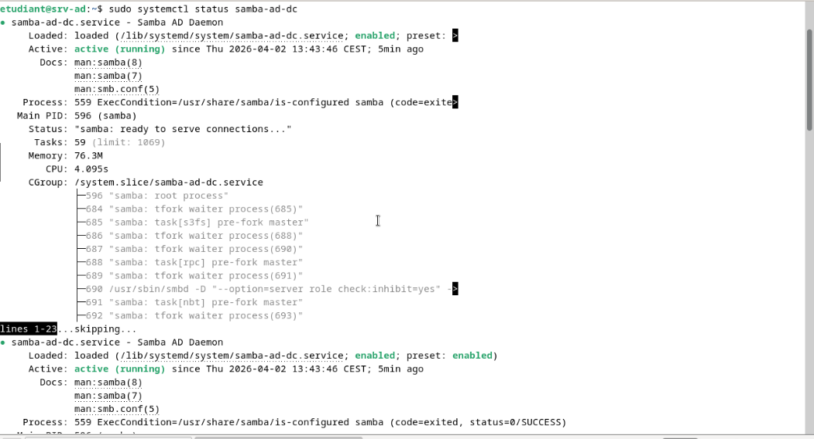

Pour démontrer l'interopérabilité des systèmes et proposer une alternative open-source aux solutions propriétaires, j'ai déployé un contrôleur de domaine Active Directory complet en utilisant un serveur Linux et Samba4. Ce projet prouve qu'il est possible de gérer un parc Windows de manière centralisée avec des outils libres.
Afin de structurer le déploiement de ce nouveau domaine, l'intervention a été planifiée sur deux semaines (S1 et S2), de l'analyse initiale jusqu'à la phase de tests et documentation :
| Tâches du projet | Lun S1 | Mar S1 | Mer S1 | Jeu S1 | Ven S1 | Lun S2 | Mar S2 | Mer S2 | Jeu S2 | Ven S2 |
|---|---|---|---|---|---|---|---|---|---|---|
| Analyse des besoins | ||||||||||
| Configuration réseau | ||||||||||
| Installation et configuration Samba AD | ||||||||||
| Création utilisateurs et groupes | ||||||||||
| Intégration client Windows | ||||||||||
| Configuration GPO | ||||||||||
| Partages et droits NTFS | ||||||||||
| Mise en place du trust inter-domaines | ||||||||||
| Tests et validation | ||||||||||